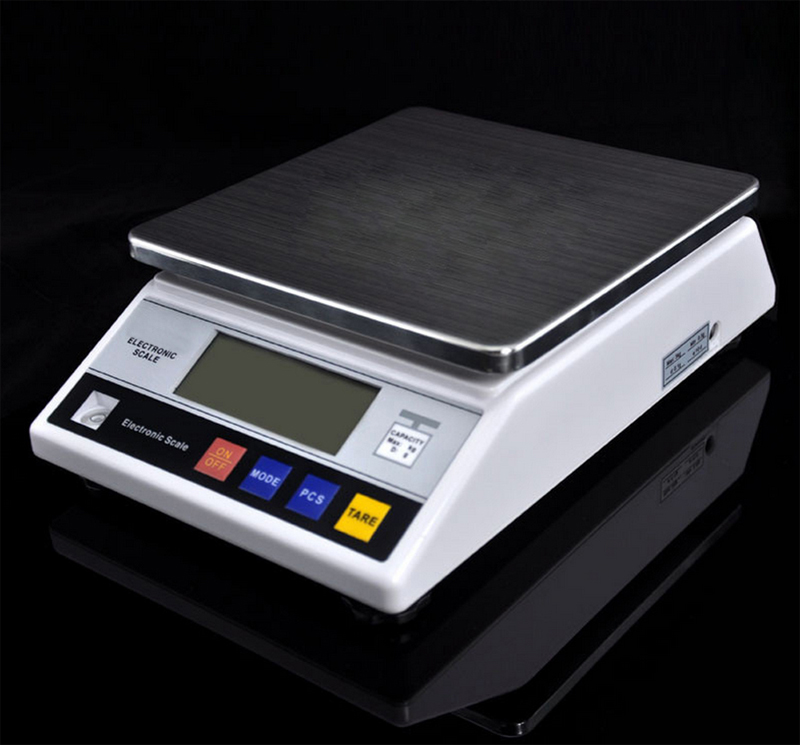
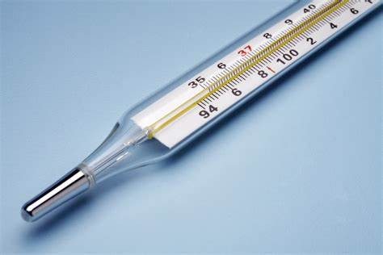

Calibration Helper

Scales Calibration
Scales calibration with standard procedure of ISO-123:2012. Follow the interactive instruction as you calibrate your scales.

Thermometer Calibration
Thermometer calibration with standard procedure of ISO-123:2012. Follow the interactive instruction as you calibrate your thermometer.

Comming Soon
Comming soon calibration with standard procedure of ISO-123:2012. Follow the interactive instruction as you calibrate your comming soon.
About
Calibration Helper is a website base made by Yusuf Chandra, an Physics Engineering Student
at ITS to help any calibrations needs. This helper made with concerns regarding the new rule
of ISO or any other new calibration standard. Keep in mind that this helper not is not always
in pace with the new standard calibration regulations. Thank you for using this site!.